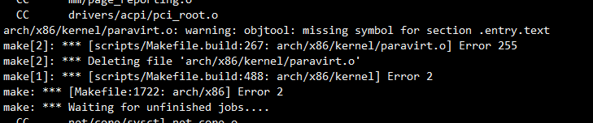

dirtypipe漏洞分析
不可视境界线最后变动于：2022年11月10日 上午
基本参考kp
一、简介
Dirty Pipe 漏洞是 Linux 系统中的一个内核提权漏洞，漏洞危害堪比 Dirty COW，但相对于 Dirty COW 来说更加容易利用。
漏洞影响范围：pipe: merge anon_pipe_buf*_ops - linux commit （v5.8-rc1） ~ lib/iov_iter: initialize “flags” in new pipe_buffer（v5.17-rc6）
时间范围大概是 2020/5/21 - 2022/2/21。
二、环境搭建
编译遇到的问题:
经典的thunk.o, 已经遇到过了.
然后又来个新活, 打了又一个patch. 真找了半天.
然后又装了个dwarves, 因为
BTF: .tmp_vmlinux.btf: pahole (pahole) is not available
三. 代码浅析
iov_iter
结构体 iov_iter 用于迭代那种被分为多个页的数据，换句话说，该结构体将用于迭代一个个页面。其结构体如下所示：
1 | |
其中，一些字段的意义如下：
type：表示当前迭代的数据是来自于什么结构，例如：- ITER_PIPE 表示当前迭代的数据为某个 pipe 中的页数据
- ITER_DISCARD 表示写入当前 iov_iter 的数据全部丢弃。
ITER_KVECdo almost the same, but with data in kernel space,ITER_BVECto work with parts of memory mapped pages.
后续针对 iov_iter 做内存读写时，会根据这个 type 来执行不同类型的内存读写操作。
iov_offset：当前所迭代到 page 的相对偏移，读写将从该 page 的这个相对偏移开始。cout：可读写的数组字节大小
pipe_read调用结构
flowchart TB
pipe_read --> copy_page_to_iter
copy_page_to_iter -->|KVEC+BVEC| copy_to_iter
copy_page_to_iter -->|iov_iter_not_pipe| copy_page_to_iter_iovec
copy_page_to_iter -->|ITER_PIPE| copy_page_to_iter_pipe
copy_to_iter --> _copy_to_iter
_copy_to_iter -->|iter is pipe| copy_pipe_to_iter
_copy_to_iter -->|other| iterate_and_advance???
other_callpoint -->|with iov_iter is pipe| copy_to_iter
copy_pipe_to_iter --> push_pipe
copy_pipe_to_iter --> a["memcpy_to_page(per page)"]
- 由于
copy_page_to_iter_pipepipe buf 是直接引用其他页，因此在 page_write 处必须确保新传来的数据不会写入这样的页面中，而这种保证就依赖于 MERGE 标志。然而可以看到一个有意思的事情：虽然 recv pipe buf 结构体上的众多字段都被重新赋值，但有一个字段却被遗漏了，那就是 flags 字段！ push_pipe的作用是检查要写入的pipe的空间是否足够. 如果不够则进行扩充. 当 kernel 循环扩充 pipe_buffer 上的页时，这里也并没有初始化 pipe_buffer 的 flag 标志！又因为 pipe_buffer 在设计上便是一个环，因此在扩孔 pipe_buffer 时，这里也将重用先前 pipe_buffer 所设置的 flag。
这里简单总结一下 copy_page_to_iter 函数与 copy_to_iter 函数在复制数据进 pipe 时 所实现的差异：
- 前者是在一个完整 page 上，将数据复制给 pipe。因此 pipe buf 只需直接引用该页，并记录下 offset 和 len，即可完成复制操作。
- 后者不保证源数据在完整 page 上，而是提供了 addr 和 len，因此 pipe buf 需要自己准备存放数据的 page。